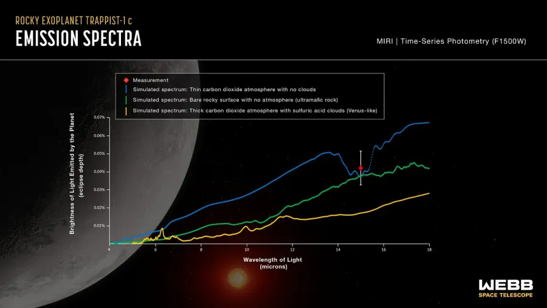

19. Juni 2023
TRAPPIST-1 c hat keine dichte Kohlendioxid-Atmosphäre
Mit dem Instrument MIRI des James-Webb-Weltraumteleskops wurde die Wärmestrahlung des Gesteinsplaneten TRAPPIST-1 c gemessen. Seine Tagseite ist rund 380 Kelvin (etwa 107 Grad Celsius) warm. Damit war er der bis dahin kühlste Gesteinsplanet, der anhand seiner Wärmestrahlung untersucht wurde.
TRAPPIST-1 c ist etwa so groß wie die Venus und erhält ähnlich viel Strahlung von seinem Stern. Eine dichte, venusähnliche Kohlendioxid-Atmosphäre ist nach den Messungen aber unwahrscheinlich. Sie passen zu nacktem Gestein oder zu einer sehr dünnen Atmosphäre. Die Ergebnisse erschienen in der Fachzeitschrift Nature.
Quellen: NASA: "Webb Rules Out Thick Carbon Dioxide Atmosphere for Rocky Exoplanet.", 19.06.2023; ESA/Webb: "TRAPPIST-1 c emission spectra." (image page), 19.06.2023